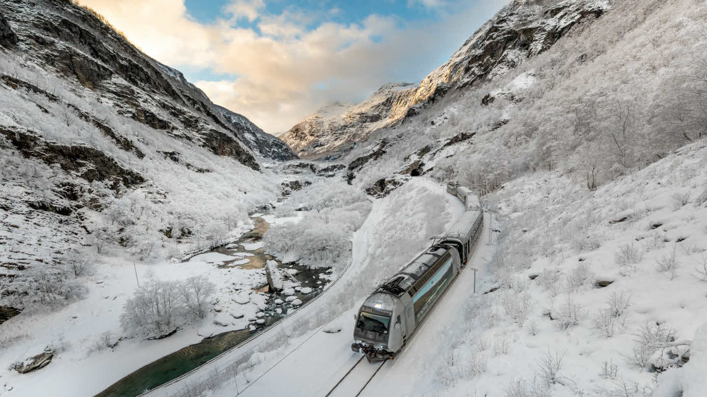
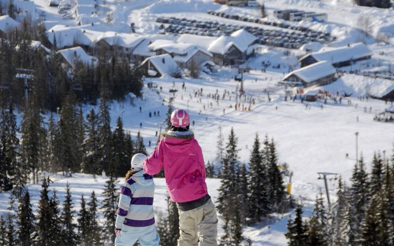

1.Это путешествие пронесет вас через красивейшие места Западной Норвегии. Фломская железная дорога признана одним из самых красивых в мире железнодорожных маршрутов. А еще она является одной из главных туристических достопримечательностей в Норвегии. Поезд отправляется от окончания Эурланн-фьорда, притока Согне-фьорда, и идет вверх по гористой местности до станции Мюрдал. Забронировать билет на поездку по фломской дороге будет стоить 500 норвежских крон или приблизительно 4300 рублей.

2. Где как ни в Норвегии стоит занятся лыжным спортом! Ведь Норвегия – родина современного лыжного спорта и богата лыжными курортами. Слово ski (лыжа) по-норвежски значит «кусок дерева».

3. Выходные на «даче» являются частью норвежской национальной культуры. Как только у семьи появляется свободное время или наступает школьный праздник, норвежцы устремляются в леса и горы, чтобы провести его в домике у озера, где может даже не быть электричества и отсутствовать мобильная связь. Природа Норвегии величественна и разнообразна. Леса, горы, реки, озера, море — в первозданном состоянии. Отношение к природе очень бережное. Браконьеров нет, мусора тоже практически нет. Благодаря морю нет комаров и прочих насекомых. Думаю грех будучи в этой прекрасной стране разок другой не выбраться на подобный отдых.